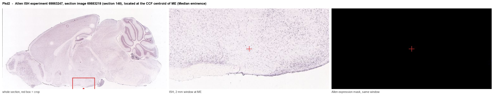
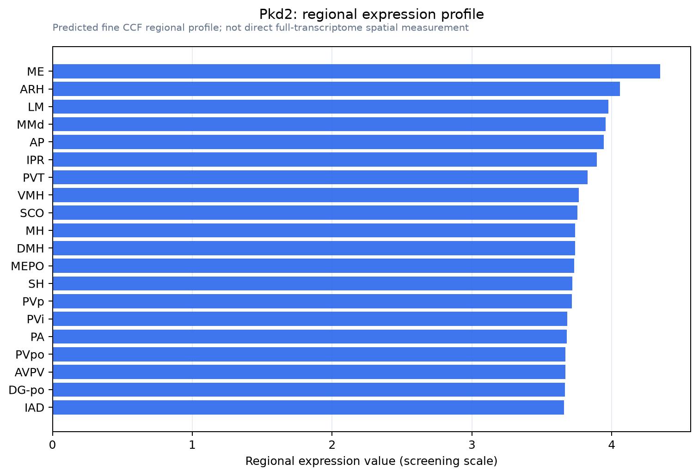

Pkd2
Polycystin-2 (Polycystic kidney disease 2 protein homolog) (Transient receptor potential cation channel subfamily P member 2)
Spatial tier: REGION_BIASED · Class: ION_CHANNEL · Top region: ME (Median eminence) · Positive regions: 40/554
41.4Discovery Score
38.0Targetability Score
CEvidence grade C
What this means: Pkd2: fine CCF profile is region-biased toward ME (top regions: ME, ARH, LM, MMd, AP); this is a discovery lead, not direct proof.
Function in ME: evidence, prediction, innovation
- Gene function
- Pkd2 encodes polycystin-2 (TRPP1/TRPP2), a calcium-permeable TRP-family channel that assembles with polycystin-1 or as a homotetramer in primary cilia and endoplasmic reticulum. It converts mechanical and chemical cues into ciliary calcium signals; mutations cause autosomal dominant polycystic kidney disease, and in arterial smooth muscle PKD2 sets vascular tone and blood pressure.
- Region function
- The median eminence is the hypothalamic neurohaemal organ, lined by tanycytes whose apical surfaces contact third-ventricle cerebrospinal fluid and whose basal processes contact fenestrated portal vessels.
- Published in this region
- inferred No region-specific literature found. The closest evidence concerns the adjacent ciliated ventricular lining: Ohata 2015 localised Pkd1 and Pkd2 to radial glial primary cilia and showed with Nestin-Cre;Pkd2-flox mice that they set planar polarity of ventricular epithelium, and Bressan 2026 showed PKD1/2-TRPM3 transduces ependymal cilia forces into neural stem cell quiescence. Allen ISH detects essentially no Pkd2 in ME (0.00 versus 0.26 for grey matter, experiment 69863247), so this hit needs caution.
- Predicted function
- Prediction: any genuine median eminence polycystin-2 lies in tanycyte primary cilia and portal-vessel mural cells, transducing CSF flow and vascular shear into calcium transients controlling tanycyte barrier plasticity. Tanycyte-restricted deletion should disturb apical polarity and CSF sensing rather than hormone synthesis, giving blunted fasting-induced barrier remodelling, and mild hydrocephalus if deletion extends into ependyma.
- Innovation
- ★★★★★ 5/5 Polycystin-2 mechanosensing has never been tested in tanycytes, ciliated CSF-contacting cells sitting in a shear-exposed neurohaemal niche.
- Tools
- Pkd2 floxed mice crossed to Nestin-Cre or tanycyte CreER lines (Ohata 2015); in vivo CRISPR-Cas9 deletion of PKD1/2 in ventricular-zone cells (Bressan 2026); polycystin-activating oxysterol 7-beta,27-dihydroxycholesterol; polycystin-2 antibodies.
- References
Direct evidence located at the region

Allen ISH experiment 69863247, section image 69883218 (section 148): the section that contains the CCF centroid of Median eminence according to the Allen image-to-atlas alignment (reference_to_image), with a 2 mm window around that point. Left: whole section, red box = window. Middle: ISH signal. Right: Allen's expression-mask view of the same window. open this image in the Allen viewer
Look it up yourself: Allen Mouse Brain ISH for Pkd2Allen reference atlas: ME (structure 10671)ABC Atlas MERFISH viewer(in the ABC Atlas choose dataset MERFISH-C57BL6J-638850-CCF, colour cells by gene "Pkd2" or by parcellation_substructure "ME")All genes confined to ME + 3-D brain
Direct spatial evidence
MERFISH REGION LOCATOR

Regional expression figure

Predicted WMB × fine-CCF profile; not direct full-transcriptome spatial measurement.
Spatial profile
Evidence and specificity
- Evidence status
- PREDICTED_FINE
- Direct sources
- None; predicted localization only
- Exclusive threshold
- 12 positive regions out of 554
- Spatial specificity
- 0.279
- Top-region fraction
- 0.043
- Filter status
- PASS
Interpretation limits
- Cell-type-to-region projection is imputed expression, not direct spatial measurement.
- Adult reference atlases do not establish stability across age, sex, strain, state, or disease.
- Transcript abundance does not guarantee protein abundance or genetic-tool performance.